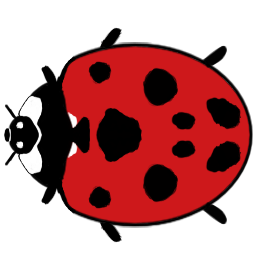
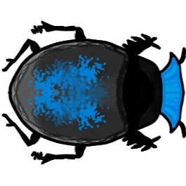

I’m making a 2D real-time strategy game about bugs addicted to human beverages.
I listen to a lot of game development podcasts and read a fair amount of game development blogs. Industry veterans on these platforms are often asked to give advice to developers on how to decide on what type of game to make. The most common piece of advice I hear is “make a game you would want to play”. I love this advice, it cuts through all the mumbo jumbo, analysis paralysis, feasibility concerns, and noise. It gets to the core of why many people want to make games in the first place and that's because they love games. And are inspired by the games they are playing.
Taking this advice to heart, I turned to the games I was really digging at the time. And the game I couldn’t put down on the train, in line at the grocery store, lounging on the couch, was speed chess. I’ve always found chess to be an elegant game but I think the digital, online era took it to the next level. At your fingertips you can have a 2 minute battle with a stranger on the internet filled with mini triumphs, brutal mistakes, emergent scenarios, and more. And it’s all on a clock, you have to think on your toes and become completely absorbed. There’s no time to second guess or agonize over decisions. It’s all a really satisfying flow state and instinct exercise. The fact that it is self contained in a short but sweet experience that is easy to have over and over again but also easy to walk away from at any time also appealed to me.
At some point when I was doing a tower defense tutorial to learn Unity2D I realized I was learning to tools to make a real-time strategy game rather than a turn based one like chess. My mind immediately started to light up with beloved memories playing and watching 1v1 Starcraft II matches. A strategic tug of war, maximized resources and unit positioning. I stuck to an 8x8 chess grid as my battlefield. And envisioned a hearthstone like health and resource system that were simply integers displayed on a screen rather than the cloak of mystery and exploration characteristic of an RTS like Starcraft.
My armies were going to be bugs. There was never any doubt. I have a weird fascination with bugs and the lives they live. I like to fantasize about bug worlds and project human personalities and societies upon them. The 3 player choices I settled on are “Beetle Brigade”, “Hive Mind”, and “Spidey Party”. I have a design doc with all sorts of exciting unit types. I am finished with “Beetle Brigade” and I can’t wait to get the first build up so people can start experimenting with it.
The 8x8 chess board is split down the middle vertically with each player getting half of the grid. Players can place mobile and stationary units with the objective of lowering the other players health by crashing healthy bugs into the back of their grid. Resources will limit the amount of bug units that can be placed at a time.
I have a lot of ideas I want to try around randomness and environmental changes to keep the pace of a match exciting. But yeah that's the genesis of what I’m trying to create! So far I have 8 beetle types in one “versus AI” game mode with a solid foundation of art, coding and animations. I have so many plans for it we’ll see where we can go from here!